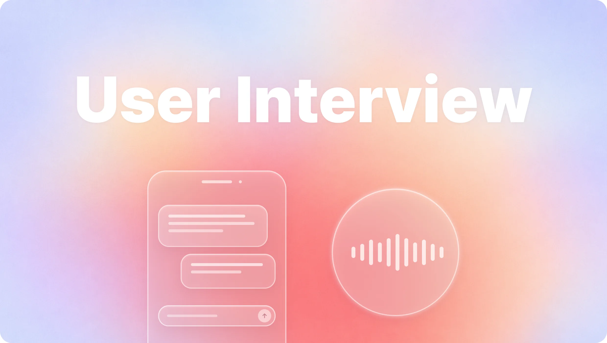
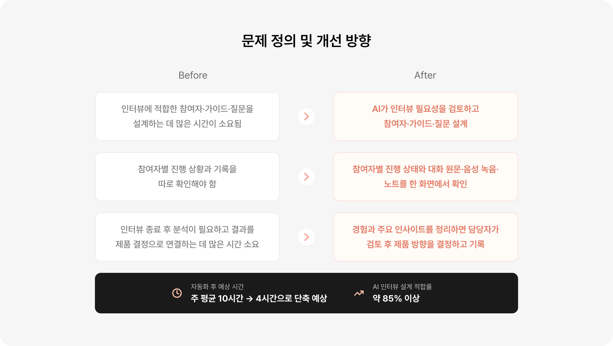
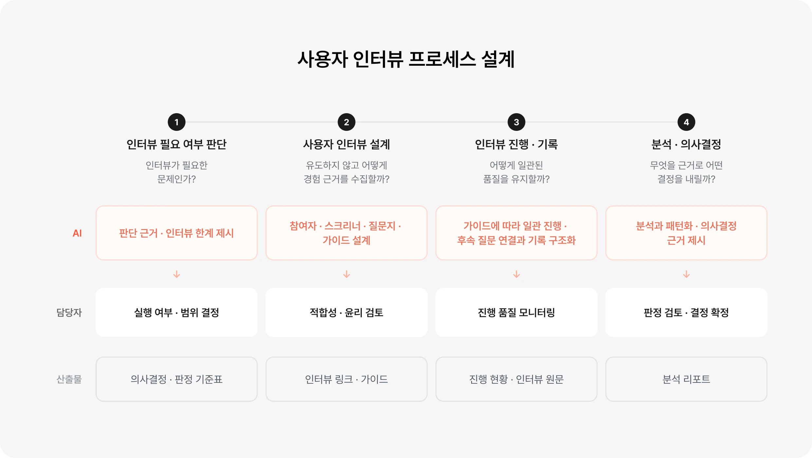

Overview
사용자 인터뷰 설계부터 분석까지 자동화해 제품 의사결정으로 연결하기
사용자 인터뷰는 질문 설계부터 진행, 기록 분석을 거쳐 수집한 근거를 제품 개선 방향으로 연결하는 데 많은 시간이
소요됐습니다. 이에 AI가 인터뷰 필요성 검토와 참여자·질문 설계, 진행 현황과 기록 관리, 분석을 지원하고 담당자는
단계별 근거를 검토해 의사결정하도록 프로세스를 개선했습니다. 이를 통해 리서치 전 과정에 걸리는 시간을
약 10시간에서 4시간으로 60% 단축하는 것을 목표로 했습니다.

Background
인터뷰 설계·진행·분석의 부담을 줄여
제품 의사결정에 집중하도록 했어요.
인터뷰 설계와 진행 관리, 결과 분석에 드는 시간을 줄이는 방향으로 개선안을 설정했습니다. 실제
업무 플로우에 적용했을 때 주 평균 10시간의 업무를 약 4시간으로 단축할 수 있을 것으로
예상했으며 AI가 생성한 인터뷰 설계를 큰 수정 없이 활용할 수 있는 비율을 85% 이상으로 달성하는 것을 목표로 했습니다.

Workflow
AI는 인터뷰 설계와 분석을, 담당자는
단계별 근거를 통해 의사결정해요.
인터뷰의 필요성 판단부터 설계, 진행·기록, 분석까지 각 단계에서 필요한 판단과 산출물을
정의했습니다. AI는 자료를 바탕으로 설계와 분석 근거를 제안하고, 담당자는 리서치 목적과 참여자 적합성, 윤리와 진행 품질을 검토하도록 역할을 나눴습니다. 단계별로 검토한 결과를 다음 단계의
기준으로 연결해 수집한 사용자 경험이 최종 제품 의사결정의 근거로 이어지도록 설계했습니다.

Solution
인터뷰 설계부터 배포, 진행 관리까지
하나의 흐름으로 연결했어요.
인터뷰 준비와 운영 업무를 하나의 도구에서 수행하도록 설계했습니다. 리서치 목적과 가정을
입력하면 AI가 참여자 기준과 질문·가이드를 제안하고, 담당자 검토 후 챗봇·음성 인터뷰 링크를
생성해 배포할 수 있도록 구성했습니다. 또한 참여자별 진행 상태와 응답 기록을 한곳에서 확인하고 수집한 원문을 분석에 바로 활용할 수 있도록 연결해 반복적인 운영 업무를 줄였습니다.